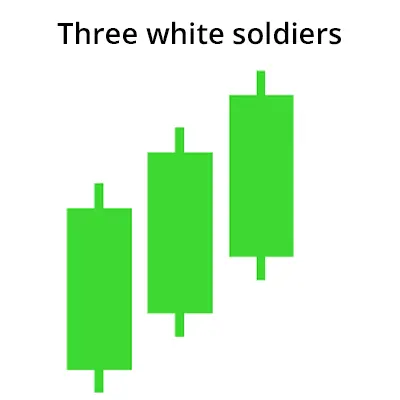

மூன்று வெள்ளையான ராணுவத்தின் முறைமுறையாக உருவாக்கப்பட்டது என்பது ஒரு வணிக முறைமுறை,
இது சந்தையின் கீழ்வளைவு அமைப்பைவிட மேல் அமைப்பைக் குறிப்பிடுகின்றது. இந்த முறை
மூன்று மேல்வளையும் கண்டில் ஸ்டிக்குகள் மூலம் உருவாக்கப்பட்டுள்ளது, அவற்றின் ஒவ்வொன்றும்
"வெள்ளை ராணுவ வணிகும்" என்று அழைக்கப்படுகின்றன.